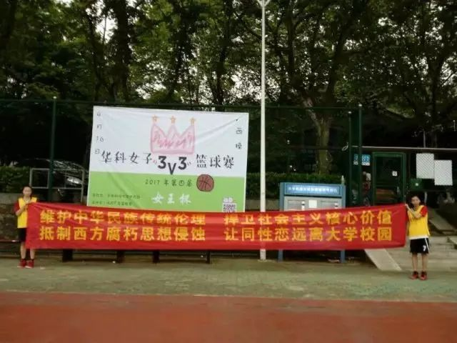
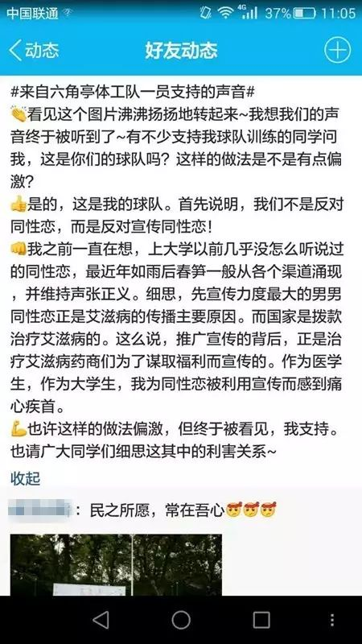
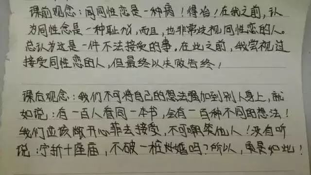

华科事件丨有人恐同，有人心痛，谁之过？
事件回顾
4月16日下午， 在西操“华科女子3V3篮球赛”的海报下，有两名身着篮球服的女生举着一条内容为“维护中华民族传统伦理 捍卫社会主义核心价值 抵制西方腐朽思想侵蚀 让同性恋远离大学校园”的横幅。该照片于拍摄于16日下午，最早从QQ空间中传出。

如此轰烈的举动和言论，不出一天便刷爆了朋友圈。事件的起因是什么？是断章取义，还是确有此意？
事件梳理
当事人：让同性恋远离校园’，就像让邪教远离校园
梨园医院15级博士生赵可心承认，“拉横幅的是我和李妙文”，并声称她们并不是“同济女篮”，而是成员包括同济校区与主校区学生的“六角亭体工队”(六角亭为武汉一所精神卫生中心）。
而发布那张图片的QQ账号的主人凌冰，赵可心介绍他为“赞助老板”。之后“六角亭体工队”的另一名队员。
图：广为流传的凌冰空间截图
赵可心表示，“截至目前（17日早上10点）为止，我的好友中已有十多位教师以及三位中央教育部、省教育厅领导明确对我们表示支持。其中我的好友中教师表示支持的比例接近65%，教育系统领导支持比例接近100%。”虽然并未说明支持者具体是谁，但赵可心说他们支持的就是“公开反对同性恋的态度”：“我作为一个医学博士，有责任从理论上加强公共卫生安全。现在我国高校中感染艾滋病的主要途径就是同性恋和其派生的滥交行为。特别是某些圈子中同性恋已经成为一种文化象征，这将对高校的思想道德建设和公共安全产生极大的不良影响。”
至于横幅内容，她这样解读：“‘让同性恋远离校园’，就像让邪教远离校园一样，并不是要消灭同性恋者，应该要教育和改造他们。我们坚决反对的是公开宣扬同性恋，并且为同性恋唱赞歌的行为。”至于如何教育改造，她解释为：“不和同性恋接触，不进行同性恋活动。”
赵可心认为同性恋在中国就是不能被主流价值所接纳的行为，同性恋者应该适应这种社会身份地位，并且为自己不同于常人的选择承担代价，而不是让整个社会来为他们的行为买单。“只要一天中央的政策还是不支持同性恋，我们就一天紧跟中央的脚步。”
支持者：我想我们的声音终于被听到了
中西医14级的张睿更新了自己的QQ空间，转发了凌冰的原始图片说说，配文“看见这个图片沸沸扬扬地转起来~我想我们的声音终于被听到了~……首先说明，我们不是反对同性恋，而是反对宣传同性恋！……也许这样的做法偏激，但终于被看见，我支持。”

图：空间截图
女篮联盟：部分参赛者的价值观，不代表联盟立场
晚上11点半左右，HUST女篮联盟公众号在与女子篮球赛其他主办方达成协议之后发表声明，澄清“横幅只代表部分参赛队员的价值观，不代表联盟立场。”

传统文化伦理&核心价值观：这个锅我不背
“龙阳”、“断袖”的故事在我国自古流传，绝谈不上为天理所不容。明朝法律严禁官员狎妓，清朝狎妓更是严禁的，但狎男优可以通融，官吏可以招伶人陪酒唱曲。到了民国时期，“同性恋”一词和围绕在该词的医学理论传播至中国和华人地区，逐渐促成对同性恋的社会污名。当时被译介至中国的西方性学家，包括赫希菲尔德、艾利斯、布洛赫、埃宾、佛洛伊德和卡本特等人。在这些翻译作品中，不只有病理化的论述，也呈现了卡本特把同性爱当作一种高贵情感的观点，而在1920年代之后，赞颂同性之爱的论述变得愈来愈弱，负面观点的论述则占据了主流地位。（以上来自维基百科）
至于“社会主义核心价值观”的二十四个字中，也没有打击同性群体的内容，而是强调了“平等”与“友善”。
华科：暂未对此事表态
校方对此事暂时没有回应。但是，华科作为国内最同志友善的校园之一。开设性别课程，拥有同志社团，并且前校长根叔曾经表态：
我们学校还从未讨论过这个问题，但整个社会对同性恋都能够理解，至少是容忍态度。我们年轻的时候，同性恋是违法的，现在时代不同了，世界更多的国家对同性恋采取理解的态度。老百姓以前反感，现在能够容忍。我们学校对同性恋没有歧视。
图：根叔与学生交流
评论：根本原因是性/别教育缺位
作为一个刚刚接触性/别教育的菜鸟，在工作上时常受到质疑——“年轻的一代自然可以接纳性少数，越年轻，学历越高越能接受，你们不必去做什么多元性别分享”。但这次华科横幅事件，当事人作为医学博士，却认为同性恋是感染艾滋病的主要途径，同性恋需要被改造。这种让人啼笑皆非的无知言论，折射出来的，恰恰是当事人的恐同。而恐同的背后，是性/别教育的缺位。
推动校园同志友善环境，就需要开展多元性别平等教育。过去五年校内频发的性别、性向不平等事件，核心是师生缺乏性别意识和对性少数群体的无知。没有人是生来的性别/种族/阶级的歧视者。长大后却带着各种刻板印象与偏见来看待周遭的人和事物，甚至理所当然的歧视。这就是我们日常生活不断累积起来的。
因此，学校性别教育就是应该传递正确且具性别平等价值的信息，才能不让刻板印象和偏见蔓延。只有通过游说关键教育决策者、培训教师、设置专门课程与教学介入，进而影响师生才能促进性别地位的实质性平等。教师也应该分清个人观点和职业角色，意识到自己“认知”的局限和作为特殊岗位言论带来的广泛影响。没有这种自觉，就无法看到教师言论带来的负面危害。而不是简单的言论自由问题。
由于工作的关系，我有幸结识了一些致力于推动青少年性/别教育的老师和社工。最近和ta们沟通开展性/别教育的情况时，90%的老师和社工表示：
“以前从来没有跟学生讲过性取向、性别认同、性别表达这些概念，但是最近融入之后，性别表达、性取向不同于大多数人的学生愿意跟我们倾诉、聊天，终于可以及时给予ta们支持，而以前不了解性少数，甚至会觉得恶心的学生，态度都变得友善起来！”

图：中山某小学心理课堂学生反馈
遗憾的是，这只是一部分老师和社工的课堂。
在现实的校园环境中，大多数学校对于“多元性别”、“同志”闭口不谈。根据同语2016年《性与性别少数学生校园环境调查报告》，在校园环境总体感受方面，9.85%的学生认为其所在的校园环境对性少数群体学生不太友好或很不友好，23.81%认为，“校园中基本没有对性少数的认知”。39.8的学生认为其所在的校园环境对性少数群体学生态度中立。漠视忽视与中立的态度难以界定为友好或者不友好，但是在普遍缺乏性别意识和性别教育的中国校园里，漠视忽视与中立态度也完全可能是恐同的“隐而不见”。
“校园中出现对性少数的认知”可以解决什么问题？也许ta依然并不能让每个人都能尊重在性别气质和性取向上与大多数不同的人。但重要的是，ta提供了更全面的信息——ta让我们听到了不一样的声音，看见了与主流不一样的存在，而不一样并不会伤害到别人。
“看见”，恰恰是了解和尊重的基础。
** THE END **
注明：本文事件梳理转自武汉同行
编辑&评论：萧萧


点击“阅读原文”参与事件后续行动